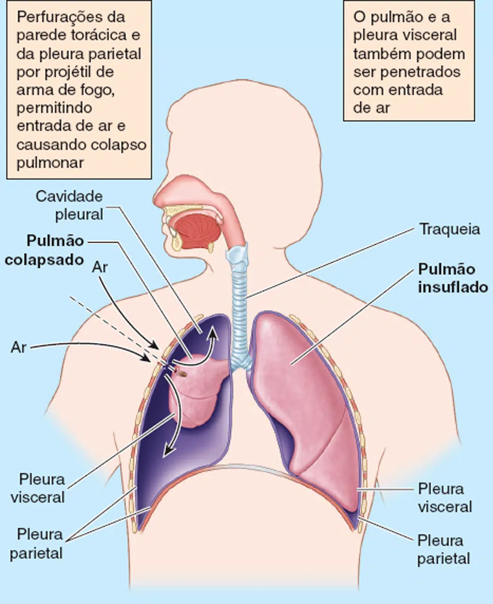
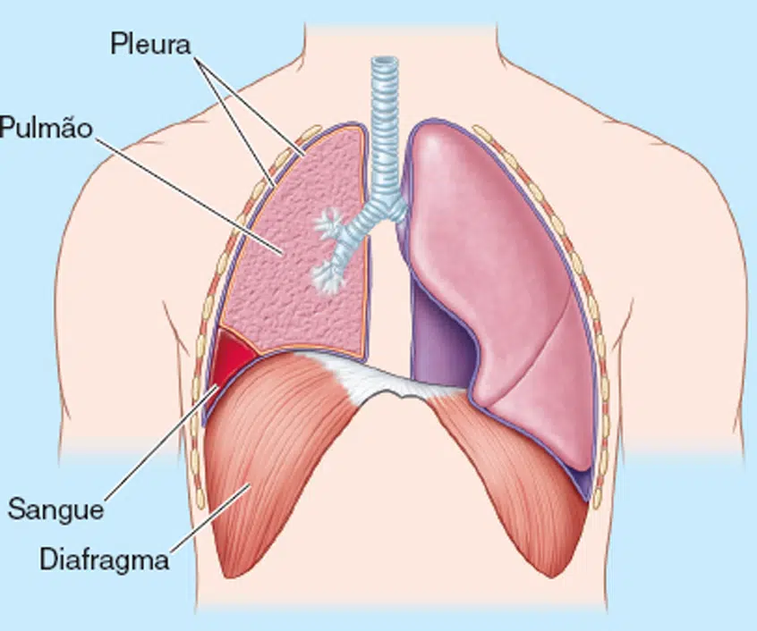
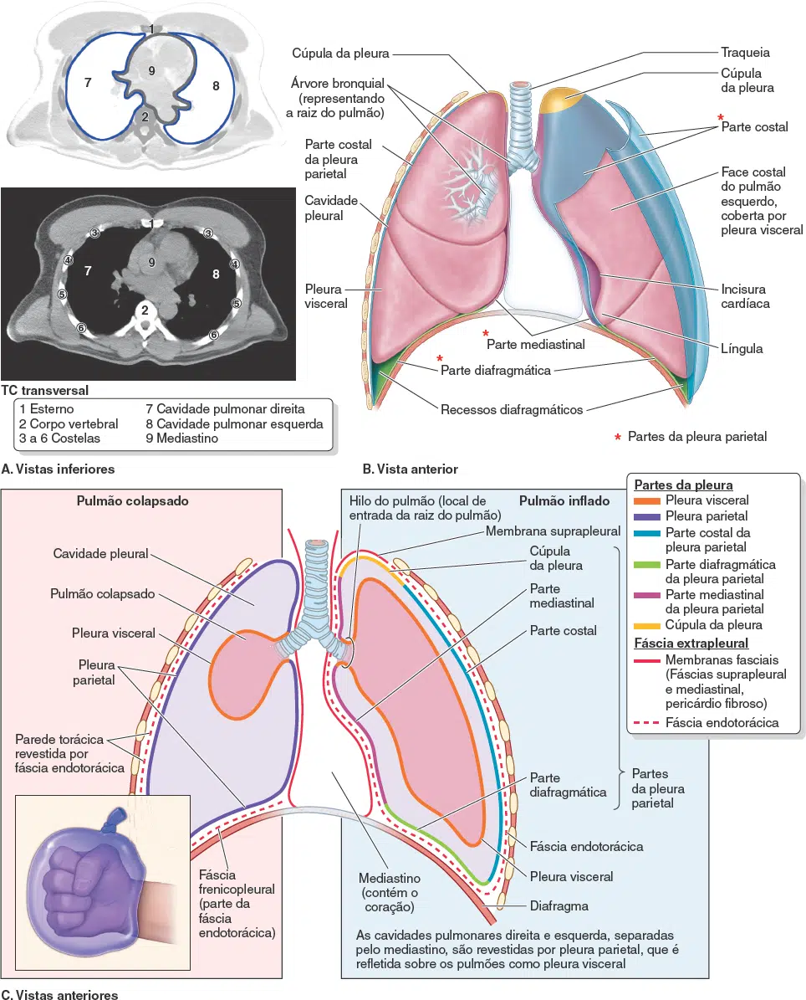
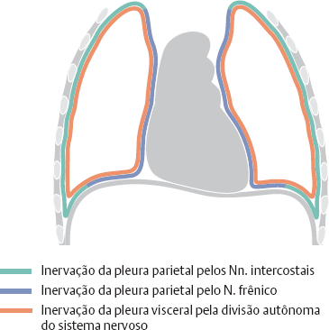
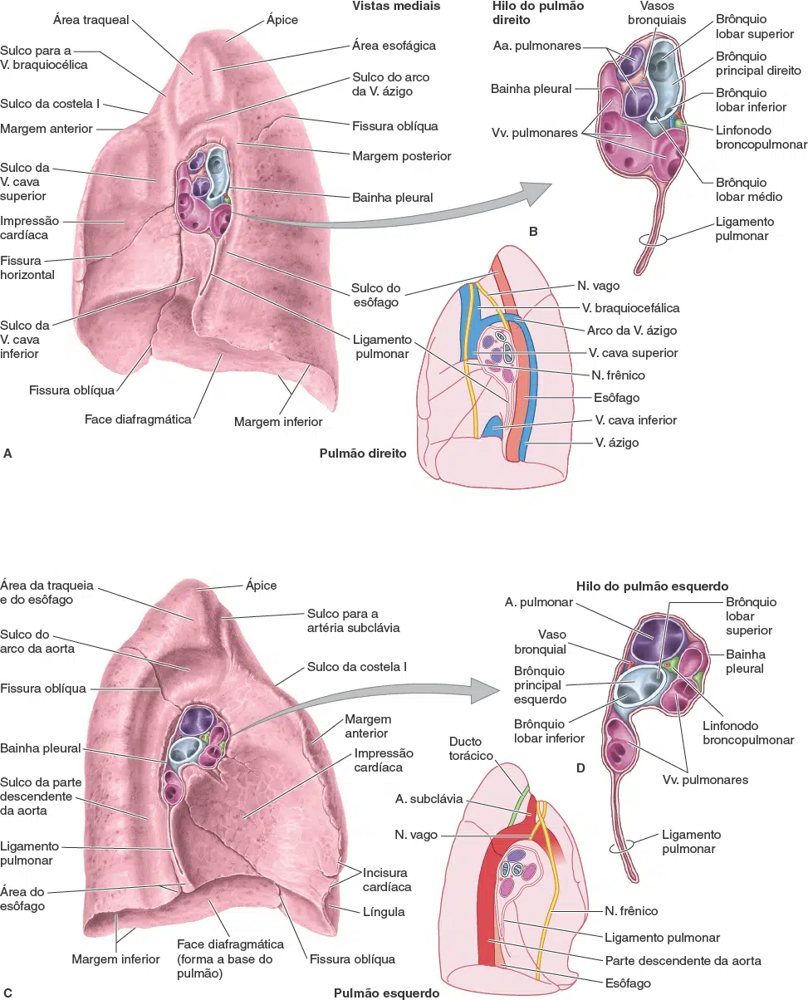

A cavidade torácica é dividida em três espaços principais: o mediastino central e as cavidades pulmonares direita e esquerda, que abrigam os pulmões.
Cavidade Pleural: É um espaço virtual (com espessura capilar) entre as camadas parietal e visceral. Normalmente contém apenas uma fina película de líquido pleural seroso, que atua como lubrificante, permitindo que as camadas deslizem suavemente.
A tensão superficial desse líquido mantém a superfície pulmonar em contato com a parede torácica, permitindo a expansão do pulmão durante a inspiração.
Este espaço pode ser identificado pelo olho humano quando há um processo patológico, que acumule líquido (derrame pleural ou hemotórax por ex.) ou ar na região (pneumotórax).
Continuidade: As pleuras parietal e visceral tornam-se contínuas no hilo do pulmão (onde as estruturas da raiz entram e saem). Abaixo da raiz do pulmão, essa continuidade forma o ligamento pulmonar.


Pleuras e Cavidade Pleural
Definição e Revestimento: Cada cavidade pulmonar é revestida por uma membrana serosa contínua chamada pleura. A pleura é formada por duas camadas:
Pleura Visceral (Pulmonar): Reveste toda a superfície do pulmão, aderindo firmemente, inclusive às fissuras. Ela torna a superfície do pulmão lisa e escorregadia.
Pleura Parietal: Reveste as cavidades pulmonares, aderindo à parede torácica, ao mediastino e ao diafragma. É mais espessa do que a pleura visceral.
Partes da Pleura Parietal
A pleura parietal recebe nomes específicos de acordo com a área que reveste:
- Parte costal: Cobre a face interna da parede torácica.
- Parte mediastinal: Cobre as faces laterais do mediastino.
- Parte diafragmática: Cobre a face superior (torácica) do diafragma. É unida ao diafragma pela fáscia frenicopleural.
- Cúpula da pleura: É uma continuação superior que cobre o ápice do pulmão, estendendo-se acima da 1ª costela até a raiz do pescoço. É reforçada pela membrana suprapleural (fáscia de Sibson).
Recessos Pleurais
Os recessos são espaços pleurais virtuais que não são totalmente ocupados pelos pulmões, exceto durante a inspiração profunda.
Recessos costodiafragmáticos: São as “fossas” mais importantes, localizadas onde a pleura costal se encontra com a pleura diafragmática, circundando a convexidade do diafragma. Quando o tronco está ereto, o líquido extrapulmonar (exsudato) tende a se acumular neste espaço. A agulha de toracocentese é inserida no 9º espaço intercostal na linha axilar média para evitar o contato com o pulmão.
Recessos costomediastinais: Espaços menores localizados posteriormente ao esterno.

Vascularização
Pleura Parietal: É irrigada pelas artérias que suprem a parede torácica, como as artérias intercostais posteriores e as artérias torácicas internas. A drenagem venosa se faz para as veias sistêmicas adjacentes da parede torácica.
Pleura Visceral: É irrigada pelas artérias bronquiais. A drenagem venosa se faz para as veias pulmonares.

Inervação (Sensibilidade à Dor)
A sensibilidade à dor difere drasticamente entre as duas camadas:

